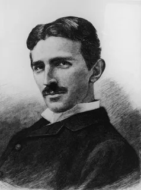

About Nikola Tesla
Nikola Tesla (July 10, 1856, Smiljan near Gospić, Austrian Empire, now Croatia – January 7, 1943, New York City) was an American inventor in the fields of electrical and radio engineering. He is best known for developing the modern alternating current (AC) electrical power system.
Timeline of Life
- 1856 – Born in Smiljan, Austrian Empire
- 1884 – Moved to the USA
- 1891 – Invented Tesla Coil
- 1893 – Presented AC electricity at World’s Fair
- 1943 – Died in New York
Achievement
- Tesla's alternating current was the winner in the battle of currents.
- Tesla invented the coil, which made wireless data transmission possible.
- Tesla invented the electromechanical oscillator.
- Tesla made a major and important contribution to the development of radio technology.